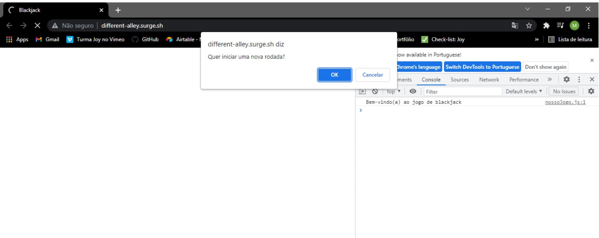
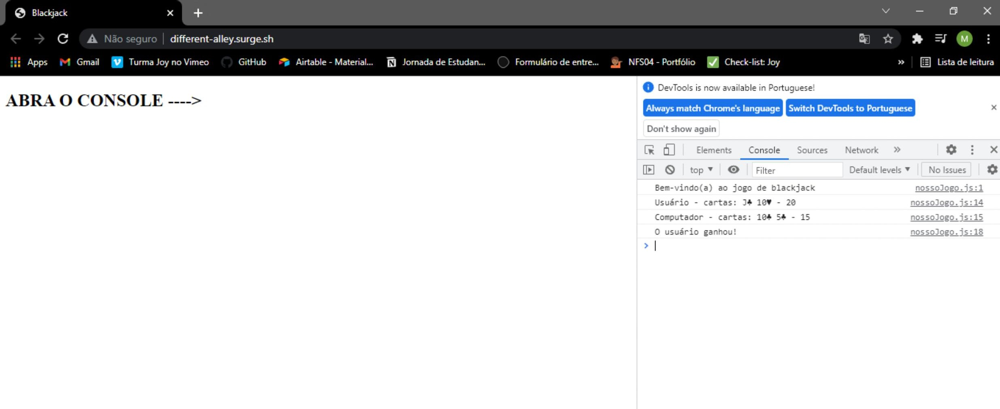

Blackjack
A ideia é criar um jogo semelhante ao Blackjack, também conhecido como "21".
Feito somente com javascript
Regras do jogo
- Existem 2 jogadores: o usuário e o computador;
- Os jogadores compram cartas do baralho. Ao comprar uma carta do baralho, ela pode ser de qualquer uma das 52 cartas, com probabilidade igual;
- As cartas tem um valor de acordo com seu número (a carta 4♣️ tem valor 4, e a carta 9♦️ tem valor 9). As cartas J, Q e K tem valor 10, e a carta A tem valor 11;
- O jogo inicia com cada jogador (usuário e computador) recebendo 2 cartas. A pontuação de cada jogador é a soma do valor das suas cartas;
- O jogador com a maior pontuação ganha a rodada.

